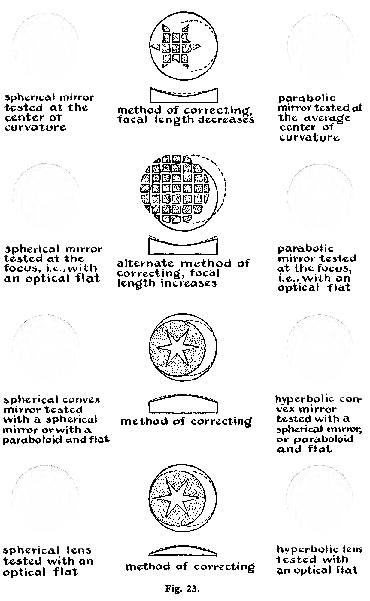

Once the prism, lens, mirror, or other blank is cut out, the operations involved in grinding the curves and polishing and figuring them may be carried out either by hand or with a grinding and polishing machine. A machine like the one shown in Fig. 10, a so-called modified Draper machine, is suitable.
The tool is moved laterally by the modified Draper machine in a thin oval stroke across the face of the work. The amplitude of this stroke is controlled by adjustment of the throw of the crank. The stroke can be arranged by movement of an adjustable guide so that it is either diametral or chordal in respect to the work. The tool may be allowed to rotate freely, or it may be driven by a belt. Also, the tool may be loaded to increase its pressure, or it may be counterbalanced to decrease its pressure on the work. The table on which the work is mounted is power driven to rotate about 2 r.p.m.
It is very important to support the work properly, or it will develop astigmatism, the anathema of optical work.
The first requisite is to have the modified Draper machine table turned and lapped 0.001 to 0.003 inch concave, depending on the size. It is then covered with a layer of thin felt and oilcloth as shown at the bottom of Fig. 10. This supports the glass uniformly on its flat bottom side and effectively prevents flexure during all of the operations. When the second surface of a lens is being worked, the plane concave glass tool that was used in the fine grinding of the first face is used to support the work on the grinding table. The tool is first mounted on the table concave side up. Then it is covered with felt and the lens is laid on it.
The work is supported laterally on the table by three edge arcs, which should fit neatly to the edge of the blank without exerting any pressure on it except as is necessary to balance lateral forces produced by the action of the tool. The work is moved around in the edge supports from time to time during grinding and polishing to distribute the effect of these forces uniformly around the periphery of the mirror, to avoid the introduction of astigmatism.
The work, if it is a mirror or lens, is prepared by having its face and back fine-ground and made parallel with a rotating cast-iron lap used with loose grits as shown in Fig. 5. The edges are then ground round and lightly beveled. Finally, the edges are polished with a wood tool and fine Carborundum grains.
Grinding the curve in the work. Full-size grinding tools of tough metal such as copper, brass, or soft iron, when turned to a definite radius of curvature, will reproduce this radius in the glass. The soft metal surface becomes charged with abrasive and is not worn appreciably when it is used on a brittle material such as glass. On the other hand, cast-iron tools change slowly during grinding, and glass tools change at approximately the same rate as the work.
The traditional way of making a 6-inch mirror by hand is to use two equal disks of glass, one as the work and the other as a grinding tool. The grinding is accomplished as shown in Fig. 11 with the work mounted on a firm pedestal, the height of which is optional. The optician walks around it as he strokes the work with the tool. Pressure is applied to the center of the tool with the thumb of the right hand. The tool is rotated with the fingers in a counterclockwise direction as it is stroked across the right side of the work. When a chordal stroke is used, the upper disk becomes concave and the lower convex. By this means a certain amount of control is given the operator. He may continue grinding, increasing the curvature in the surfaces all the time, until the desired result is attained. If he wishes to decrease the curvature, he will place the tool below and stroke it with the work. Or he may periodically reverse the relative positions of the two disks if he wishes to hold the surfaces fairly flat or constant in radius of curvature. When it is desired to hold the curvature constant, a diametral rather than a chordal stroke is used.
On the modified Draper machine, the grinding of a mirror to a definite radius of curvature is effected with a small tool. Concave curves are cut in the glass with a 1⁄3-size tool stroking the work across its center. A convex curvature is generated by a sub-diameter tool stroked across a chord of the work. Although a convex curvature will be generated if a full-size tool is stroked across the center of the work (diametral stroke), it becomes convex more rapidly when a chordal stroke is used. The rate at which the curvature changes is proportional to the amplitude of the diametral stroke or the offset of the chordal stroke.
After the work has been roughed out to the proper radius of curvature with 90, or for extreme curves 60, Carborundum, the full-size tool is used to true up the surface. The stroke used here is a thin oval across the center of the work. The amplitude used is about one third to one sixth the diameter of the work. The grinding is continued with the full-size tool until the tool and work are spherical. This is indicated by the quality of the fit between the tool and the work, which can be tested with a pencil mark made on the work. This procedure may produce scratches. A circular template is often made of the required radius and the work is ground until it fits this template. Spherometers are also used to test the work for sphericity. When the work is spherical, the spherometer reading, d, the radius of curvature of the work, R, and the radius of the circle containing the spherometer legs, r, are related as follows:
The spherical surfaces obtainable by grinding are so good, in fact, that opticians who worked before testing methods were developed as they are today hesitated to polish the grinding pits entirely away, since they formed a convenient "landmark" to which to refer the figure.
To grind deep curves like those required for an 1⁄f Schmidt camera, one puts a band around the edge of the mirror and covers its face with a layer of Carborundum grits. The band holds the grits on the mirror. As the work slowly rotates, a fast rotating sub-diameter cast-iron ring tool is reciprocated diametrically, or nearly so, across its surface in a thin oval stroke. The amplitude of the stroke is adjusted so that the ring tool comes to the edge of the work at the extremes of the stroke.
Final grinding in all cases should be carried out with a glass grinding tool. Glass is used rather than metal in order to have the tool change at approximately the same rate as the work, thus insuring a more perfect fit at all times between the tool and the work. The tool may be a glass disk formed as a complement of the work; that is, if the work is a convex spherical surface of radius R, the tool will be a concave sphere of almost exactly the same radius. Or the tool may be a plate of glass cemented to a metal backing. It is well to cut the grinding tool with one or more decentered grooves as shown in Fig. 12 in order to prevent suction, facilitate the access of grinding compound to all parts of the tool, and insure that the tool grinds slightly faster than the work. These grooves may be cut into the glass with the diamond or mud saw.
For large mirrors, glass disks or squares can be cemented to a convex or concave iron backing as is illustrated in Fig. 12.
The radius of curvature of the work, R, is determined by means of a spherometer or more simply by a template cut from metal. The latter can be cut with a sharp steel point (sharpened like a brass turning tool) mounted on the end of a board of length R and pivoted at the other end on a nail. For fiats a good straightedge may be used as a template.
Fine grinding. After the proper radius is attained and the work has been trued up with the full-size tool, the optician passes successively to grades 150, F, 400, and 600 Carborundum. The full-size tool, loaded to a pressure of about 0.5 lb/square inch, is used. For a 6-inch mirror about a teaspoonful of grits is applied at a time. Each application of grits, applied with one or two spoonfuls of water, is allowed to grind until the gritty cutting sound, which is heard at first, has softened. For a 6-inch mirror, grits are repeatedly added until the work has been ground a total time of 30 minutes (or 1 hour by hand). After a half-hour of grinding with one grade of Carborundum, the optician passes on to the next grade, and finally, after the 600 grade Carborundum, finishes with two grades of emery, 3021⁄2 and 3031⁄2. The work, the table of the machine, and the tool should be thoroughly washed after finishing with each grade of abrasive.
Carborundum grits as obtained commercially are well graded and do not need to be washed. However, the emeries must be washed each time they are used. The washing procedure is as follows : Put emery to a depth of 1 inch in a quart Mason jar, fill the jar with water, stir, and let settle for 10 seconds. Decant the suspended emery off to a second clean jar and discard the residue. After 10 seconds in the second jar, decant again, and repeat the operation a third time. After this, the settling time is increased to a minute to yield a residue which we will designate as residue A. The liquid over this is decanted into a clean jar, in which it is allowed to settle until it is clear, yielding residue B. The liquid over B is then put back over residue A, stirred, allowed to stand for 1 minute, and then added again to B. This is repeated several times to transfer a large fraction of the emery from A into B. Residue B, when mixed with an equal volume of powdered washed talc, is ready to be used for grinding. The talc serves as a lubricant and prevents sticking of the tool. The talc must be washed in the same manner as the emery was washed to free it of metallic iron.
The final grinding with the two grades of emery will yield a surface which exhibits specular reflection of white light at grazing incidence. At a steeper angle the reflected image is red. In fact, specular reflection of the red part of the spectrum up to a grazing angle of about 12° may be obtained. The maximum grazing angle of specular reflection affords a simple test of the quality of the fine-ground surface. A clear filament lamp should be used as a light source for this test, and when the surface gives a reflection at a grazing angle of about 12°, the work is ready to be polished.
When it is required to have the center of the mirror perforated, the necessary hole is usually cut with the "biscuit cutter" before the grinding is started. The plug is then fastened back in place with plaster of Paris. The plug is left in place until the figuring is finished.
Polishing pitch should have the following properties: It should flow slightly at ordinary room temperature; it should trim easily with a sharp knife; and, further, it should not lose its "temper" by evaporation of volatile oils. A compound which conforms to these specifications quite well is made up as follows:
| Coal tar (melting point 170° to 180° F.) | 2 lbs. |
| Pine tar (Mefford Chemical Company) | 4 liquid oz. |
| Beeswax | 1⁄2 to 1 oz. |
| Venice turpentine | not more than about 2 or 3 cc. |
The tar is melted and the other ingredients are added in the order listed.
The function of the turpentine is to adjust the final "temper" of the pitch. More or less turpentine is added, depending on whether a hard or soft pitch is desired. Before adding the turpentine and after each addition, test the pitch for temper. The simple method of performing this test is to chew a small sample of the pitch after chilling it by pouring it out on a cold glass surface. At body temperature, so-called "soft" pitch can be chewed, while "hard" pitch cracks under the pressure of the teeth. Furthermore, hard-pitch tools stored face up will show evidence of flow in the sides of the groove in about a week. A soft tool exhibits flow after standing a day. Polishing pitch does not attain its final hardness on cooling but continues to harden for a day or more. This is a sort of "jelling" process, which must be taken into account.
After the correct mixing temper is attained, pitch is filtered to remove small sticks or other hard particles. The hot pitch is poured through a cheesecloth filter supported on an iron ring. Two layers of cheesecloth are adequate to hold back harmful impurities.
Polishing tools of 6 inches in diameter or less are made by simply pouring the melted pitch compound over a support to a depth of about 3⁄8 inch. After the pitch has cooled, it is channeled by cutting it with a hot knife so that the surface is divided into a decentered system of square facets of uniform size. These facets are later trimmed in the manner shown in Fig. 13. Tools having bubbles in the pitch cause no trouble unless it happens that the bubbles occur in a definite zone on a full-size tool that is to be worked over the mirror or lens with a short stroke. In order to avoid a zone of bubbles, the pitch is cast by pouring it onto the support at one edge rather than at the center.
There are two methods of accommodating the tools to the different working conditions of summer and winter: By one, the formula is changed, the pitch being tempered with more turpentine for cooler weather; by the other, the size of the facets is changed. The facets are made smaller in cooler weather. When the formula given above is used, the facets should be about 1 inch square for temperatures above 75° F. and about 1⁄2 to 2⁄3 inch square for temperatures below 75° F.
If the polisher is to be used on soft or easily scratched material, such as speculum metal, it is advisable to use harder pitch and to have the facets narrow. The channels allow the pitch to flow evenly and also allow the rouge and water free access to all parts of the work. For speculum metal it is recommended that the facets be 1⁄32to 1⁄16 inch wide and 3⁄4 inch long.
To construct a polishing tool of relatively short radius, the pitch facets are first cast in a suitable mold in the form of sticks. (See Fig. 14.) These are then cut into squares and fastened to the metal tool as shown in Fig. 15.
After the tool has been faceted, it is warmed and pressed to the work, with soap in a 25 per cent glycerin solution as a lubricant on the work to prevent sticking. The pressing operation is illustrated in Fig. 16. The tool is gently warmed over a hot plate until the pitch is soft. Then it is applied to the work, wet with a mixture of soap and glycerin, and left to cool. This procedure yields an intimate contact between the tool and the work. Tools for flats may be first turned in the lathe before they are pressed. After pressing the pitch tool, it is advisable to wash it in cold water and also wash and dry the work to remove the soap and glycerin.
Polishing is carried out on the table of the modified Draper machine in the same manner as grinding, except that the polishing tool is usually allowed free rotation. Rouge and water is added to the work from time to time near the edge of the tool with an eye dropper. The rouge should be washed. The washing pro- cedure is the same as that described for washing emery or talc, except that the settling time is longer - up to one-half hour.
Hard facets in the tool may cause sharp zones to appear in the work during polishing. To avoid the effects of such surface inhomogeneities in the pitch and resultant irregularities in the cutting action of the tool, the work is "broken up"; that is, the tool is frequently (and irregularly) given a spin. The facets in the tool should form a decentered system. A diametral stroke is employed for polishing. A feature of the polishing machine which also contributes to breaking up the work is the incommensurable coupling obtained by the belt which connects the rotation of the work with the phase of the stroke. The stroke is varied from time to time from a long stroke of one fourth the diameter of the tool to a short stroke.
If the surface of a pitch polishing tool becomes so heavily charged with rouge that it appears hard and glassy, the polishing speed will be considerably reduced, and furthermore "sleeks" are liable to appear. Sleeking, or the appearance of groovelike marks on the polished surface, is probably caused by the formation of ball-shaped aggregates of rouge, wax, and perhaps glass, which plow out shallow channels in the surface. Beeswax-coated tools are particularly bothersome in this respect. One method of avoiding sleeks is to allow the tool to run nearly dry before each application of fresh rouge. The optician calls this "drying up each wet." This probably causes the surface of the tool to become quite warm, allowing the pitch surface to flow rather rapidly and to renew itself.
Large lenses and very soft materials are best polished by coating the surface of the polisher at regular periods with fresh pitch or beeswax. The polishing tool is to be coated at intervals of 1 to 3 hours. The beeswax is applied to the facets of the tool with a swab made of cheesecloth bound on a short stick. It is advisable to have the wax smoking hot and to apply as thin a coating as possible. In polishing speculum metal, which scratches rather easily, the fresh beeswax coating is to be charged with dry rouge. The rouge is applied to the facets with the tip of the finger.
When a full polish is achieved, that is, when the grinding pits are entirely removed, the work is ready for testing and figuring. A convenient and simple test for full polish is to focus sunlight on the glass surface with a lens. The focus of this lens does not heat the glass much, but light scattered by pits in the surface is quite conspicuous if the surface is not fully polished.
To avoid introducing astigmatism into the work during polishing, it is frequently rotated a fraction of a revolution with respect to the supporting table in order to distribute the effect of edge arcs symmetrically around its periphery.
Figuring is the process whereby a polished surface has its shape altered by local working with polishing tools. For example, a spherical surface is made aspheric, or undesirable zones or astigmatism is removed.
Sometimes in figuring plane parallels or prisms the effect of inhomogeneities in physical properties of the glass can be corrected (in first approximation) by slight deviations from flatness in the surfaces.
The general procedure in figuring is one of trial and error. Testing is alternated with local polishing on those areas whieh are high in reference to a desired surface.
The behavior of the polishing tool depends on its size, character of faceting, shape, and the manner in which it is manipulated on the work. There is no way in which a tool may be manipulated so that it will remove glass from a surface uniformly. Rather, each manipulation, if carried out on a perfectly fiat surface, tends to produce its own characteristic zones, which will be referred to as the cutting zones of the tool. Figs. 17 and 18 illustrate the cutting zones of some typical tools. These zones are defects in the mirror surface symmetrically positioned about the center of the work. The figuring procedure consists in testing the imperfect surface and working it with a suitable tool whose cutting zones will tend to cancel the zones revealed by the test.
Sharp zones are first "softened" with a large tool coated with soft pitch. This procedure applies both to those zones remaining from polishing and to those which may appear during the figuring. The latter are usually transition zones resulting from imperfect cancellation of a smooth zone in the work by the cutting zone of the tool. This is illustrated by Fig. 20. After the sharp zones are softened with a soft pitch tool, the optician tests again to determine the figure.
To carry the figuring farther, a satisfactory surface tangent to the "valleys" of the surface, lying wholly within the glass, is imagined, and the hills relative to this imagined surface are polished away with an appropriate tool and stroke. This cycle of testing, polishing in a manner such that the cutting zones improve the figure, testing, smoothing transition zones with a soft tool, testing, and so forth, is continued, until the necessary figure is attained.
Interpretation of the action of polishing and figuring tools. If we could assign quantitative values to all of the factors influencing the cutting action of any given tool and stroke, we could conceivably predict the cutting zone for it. However, we cannot do this; but we can describe the factors qualitatively as they are appraised in the minds of opticians.
First, the polishing tool cuts away the glass in proportion to the time the tool is passing over the glass.
Second, the tool cuts faster as the speed increases. The cutting or polishing rate is not, however, proportional to the speed at which the tool passes over the work.
Third, sections of the tool which overhang the work during a part of the stroke cut relatively faster than the sections which do not overhang the work.
Fourth, the facets of the tool which lead cut faster than following facets, because new rouge available to the leading facets is wiped away from the path of following facets.
Fifth, the tool cuts fastest where the pressure on it is greatest, everything else being equal. This accounts for the selective action of the full-size tool on high zones, which action is the basis of all figuring. It is important to give this factor careful consideration in working aspheric surfaces, in which the tool naturally works in a way that tends to return the surface to a sphere.
Figs. 17 and 18 show various shaped tools and illustrate the zones which they would ordinarily produce in a true flat surface when worked with both long and short strokes. The stroke in each case is a thin oval across the center of the work. The use of an oval stroke has an advantage over a straight reciprocating stroke in that the tool never comes to a complete stop.

It will be noted from Fig. 17 that the full-size tool makes the work more convex by an amount which increases with the length of the stroke. Intermediate-sized tools, as the f size, hardly change the over-all curvature of the work when a long stroke is used, while a short stroke with this tool makes the work more concave. Smaller tools make the work more concave.
It will be further noted that the effect of the tool in changing the over-all curvature is (except for the case noted) greater than its effect in producing cutting zones. This change of curvature is generally inconsequential, except where one is making flats or striving for a radius of curvature specified to extreme precision. Fig. 18 shows the action of ring and star polishjng tools.
The behavior of tools on short radius curves may differ considerably from their behavior on flats. Figs. 17 and 18 refer to flats.
As testing methods are not very precise and the polishing methods even less so, it is well to approach the desired surface carefully and slowly, with periods of polishing interrupted frequently for testing. This allows one continually to change the "stratagem according to the tactical situation and nature of the terrain." One should use a clock to time the work done with a given polishing tool. If a mirror is improved by a certain treatment of 20 minutes' duration and the test shows that about as much more work is required, it is advisable to continue the treatment for 10 or 15 minutes more and test again in order not to overreach the desired result. It must also be emphasized that tools may cut faster at first than later, so that the significance of the time factor should not be taken too seriously. Also, the behavior of any given tool may be erratic. It is best to try it for short periods at a time with frequent testing in order to be certain of its action. Inasmuch as the figuring procedure should not be hurried, beeswax-coated tools, which polish about three times as fast as uncoated tools, are not used for figuring. During the final stages of figuring, when delicate testing is required, the work should be allowed to stand on the testing support for sufficient time to allow complete equalization of temperatures. Pressing the tool through coarse cloth (such as an onion sack) gives many small facets in addition to the large facets. This results in quick contact of the tool to the glass and smooth action of the figuring tool from the start. (See Fig. 19.)
To avoid astigmatism, the work should be occasionally rotated on the supporting table. In addition, with small tools it is important always to work the tool around the optical surface through an integral number of revolutions.
Hard tools tend to maintain a surface spherical or flat and are useful for generating flats or mirrors which are being worked to a specified radius. On the other hand, soft tools are recommended for working aspheric surfaces. Mirrors made by amateurs may exhibit a better figure than mirrors turned out by professional workers. The reason for this lies in the fact that amateurs usually use soft tools, which produce smooth flowing zones. On the other hand, professional opticians have the skill and knowledge to remove zones quickly with harder tools. In many cases, this rapid working produces faint transition zones, which show up under the most severe testing conditions. It is character istic of the commercial optician that he will produce a figure as good as, but no better than, that which his specifications call for.
Focograms and exaggerated profile curves illustrating the manner of figuring various symmetrical defects are shown in Figs. 20, 21, 22, and 23.
The interpretation of focograms is described in a later paragraph. At the upper left of Fig. 20 we see the focogram and exaggerated profile of a mirror with turned-down edge. This is corrected as follows : A f -size tool and short stroke is used. Two cutting zones are produced. One zone is positioned where the leading edge of the tool comes to the extreme limit of the stroke, and the other is positioned where the trailing edge of the tool comes to the limit of the stroke. Besides making cutting zones, the tool has the further effect of making the figure more concave. The result is to change the full-line profile curve at the top left of the figure or the dotted profile curve at the top center to the profile exhibiting two sharp transition zones, as shown by the full curve at the top center and right. These transition zones are then smoothed off with a full-size soft tool with relieved edges (to avoid a turned-down edge), using a short stroke.
The treatment with a 5⁄6-size tool, as described above, is suitable for removing a turned-down edge from a circular flat; since the final treatment with a soft tool makes the work more convex (see Fig. 17), one can, by the judicious balance of the work done with the two tools, balance the increase in concavity produced by the first by the increase in convexity produced by the second. Fig. 20 shows the procedure applied to a spherical surface.
The sketches at the top of Fig. 21 show how a turned-up edge is turned down with a full-size soft tool.
The second series of sketches of Fig. 21 shows two methods of figuring to remove an intermediary depressed zone. The profile of the full line at the left or the dotted line in the center is changed by the indicated treatment, shown in the center, to the full-line profile in the center or the dotted-line profile at the right. In turn, this is changed by the indicated treatment to the spherical curve represented by the full-line profile at the right. In the first treatment the existing dotted profile, center, is elevated at the center and has a turned-up edge in reference to the imagined curve represented by the full-line profile. This imagined curve is realized with a sub-diameter tool. At the right the full line represents the imagined surface which is realized by removing the narrow sharp transition zones with a full-size soft tool. Inasmuch as this treatment does not change the radius of the work, it is suitable for figuring flats.
By the alternate treatment, which decreases the concavity of the mirror, the cutting zones of the soft full-size tool change the intermediary depressed zone (depressed in reference to an imagined spherical surface) to two sharp elevated zones on a second imagined spherical surface. These elevated zones are then managed with a sub-diameter soft tool as illustrated.
Two treatments for a small depressed zone near the center of the work are illustrated in the bottom series of Fig. 21. By one, the first imagined surface lying wholly under the glass surface requires the removal of an outer layer represented by the difference between the dotted starting profile in the center and the full-line final profile in the center. The next imagined surface, now a spheric one, leaves several sharp zones to be removed by the usual treatment with a full-size soft tool.
The alternate treatment goes from the primary defective surface to one with an intermediary elevated zone relative to the desired spheric surface. A chordal stroke is used. The elevated zone is removed by a second larger-size tool.
In working on small zones in large mirrors or relatively large zones in small mirrors the optician has as possible figuring tools the thumb, the fingers, and the ball and heel of his hand.
Fig. 22 shows how a narrow elevated zone may be removed with the thumb and how a depression may be removed with tools from which a facet has been removed. The thumb is used with extreme caution, applied lightly for one revolution at first, and then, if necessary, for a few more complete revolutions. There is a danger of overcompensating for the elevated zone with the cutting zone of the thumb, because small polishing tools cut very rapidly.

In testing an optical surface which has been figured by the fingers, one must allow enough time for the heat developed by the friction of the fingers to be dissipated. Even for one revolution, this heating will produce a false zone, by expansion of the glass, which may be higher than the original zone.
The top of Fig. 23 shows how a spheric mirror can be parabolized with a star tool. The focogram at the top right gives the appearance of the parabolic surface when it is tested at the center of curvature. The focogram of a parabolic profile tested at the mean center of curvature exhibits the character of a soft raised intermediary zone.
The second series of Fig. 23 shows an alternate parabolizing procedure and focograms of the appearance of the figure of the mirror, as tested at the focus, before and after the use of the method. The advantage of testing a parabolic mirror at the focus is evident: The optician works toward a uniform distribution of light over the mirror face. The advantage of testing at the focus over testing at the center of curvature is especially great when zones are being removed. Zones which are practically invisible if the mirror is ex- amined at the center of curvature become quite conspicuous when it is tested at the focus.
The last two series of Fig. 23 show procedures that may be used for hyperbolizing.
The correction of astigmatism is more difficult than the removal of central symmetric zones. Cylindrical defects and, in general, all defects which are not symmetrical about the center of the work produce astigmatism. These defects must be worked out by hand. The rule of procedure is the same as it is for zonal defects - namely, the polishing is done on the high portions of the surface. Transition zones are removed with a full-size tool in the regular manner. The simplicity of this rule must not, however, be allowed to obscure the fact that the correction of astigmatism is one of the most delicate operations required of the optician, and that aside from a knowledge of what is to be done it requires considerable manual dexterity. The tendency of tools to cut fastest near their periphery and especially where their edges come to rest is to be continually kept in mind. The complete removal of astigmatism in an optical surface is the apogee of good workmanship, while its avoidance is the result of experience.
[1] Ingalls, Albert G., editor, Amateur Telescope Making, page 74. New York: Scientific American Publishing Company, 1935.
[2]For a more comprehensive treatment of the theory of polishing from a different point of view, see the following:
Lord Rayleigh, Proc. Opt. Convention, No. 1, page 73 (1905); and Scientific Papers, Vol. IV, page 542. Cambridge: The University Press, 1903.
French, J. W., "The Working of Optical Parts," Dictionary of Applied Science, Vol. IV, page 326. London: The Macmillan Company, 1923.
Finch, G. I., "The Beilby Layer," Science Progress, SI, 609 (1937).
[3]I am indebted to Mr. D. O. Hendrix for the procedures presented here.
[4]Ingalls, Albert G., editor, Amateur Telescope Making, Advanced. New York: Scientific American Publishing Company, 1937.
[5]Diamond glass cutters may be obtained from the Standard Diamond Tool Corporation, 64 West 48th Street, New York City. This company also sharpens diamond glass cutters.
[6]Topler, A., Pogg. Ann., 131, 33, 180 (1867). Wood, R. W., Physical Optics, page 93. New York: The Macmillan Company, 1934.
[7]Several layers of the thin metal sheet are laid together on an anvil, and a sharp needle is driven halfway through them. They are then separated and the one with a suitable hole is selected. Each pierced sheet has a small hole of a different size and all the holes are round.
[8]See Amateur Telescope Making, Advanced, article on Foucault's shadows by E. Gaviola, page 76.
[9]Gaviola, E., J.O.S.A., 26, 163 (1936).
[10]Anderson, J. A., and Porter, R. W., Astrophys. J., 70, 175 (1929).
[11]For further treatment of optical testing, see articles contained in Amateur Telescope Making, Advanced, and references cited therein.
[12]Brashear, John A., Proc. of Am. Assn. for Adv. of Science, 38, 166 (1885).
[13]Stromgren, B., "Das Schmidtsche Spiegelteleskop," Vierteljahrschrift der Astronomischen Gesellschaft, 70, 65 (1935). Smiley, C. H., "The Schmidt Camera," Popular Astronomy, 44, 415 (1936).